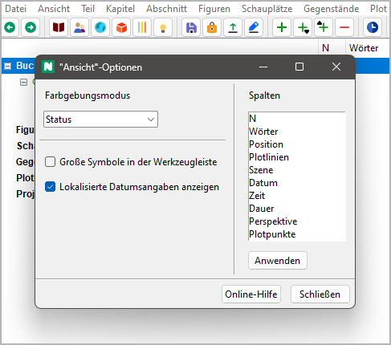

Ansicht-Menü
Anzeige-Operationen
Kapitelebene anzeigen
Die Abschnitte verbergen
Mit Ansicht > Kapitelebene anzeigen oder Strg-Alt-C
können Sie den Baum so einklappen,
dass nur Teile und Kapitel sichtbar sind.
Ausgewählte aufklappen
Einen ganzen Zweig anzeigen
Mit Ansicht > Ausgewählte aufklappen können Sie einen ausgewählten Zweig aufklappen.
Ausgewählte einklappen
Kindelemente vebergen
Mit Ansicht > Ausgewählte einklappen können Sie einen ausgewählten Zweig einklappen.
Alles aufklappen
Den ganzen Baum anzeigen
Mit Ansicht > Alles aufklappen können Sie den ganzen Baum aufklappen.
Alle einklappen
Kindelemente verbergen
Mit Ansicht > Alle einklappen können Sie alle Baumelemente außer den Hauptkategorien verbergen.
Buch anzeigen
Zum „Buch“-Zweig gehen und ihn aufklappen
Mit Ansicht > Ansicht Buch können Sie den „Buch“-Zweig anwählen und öffnen.
Figuren anzeigen
Zum „Figuren“-Zweig gehen und ihn aufklappen
Mit Ansicht > Ansicht Figuren können Sie den „Figuren“-Zweig anwählen und öffnen.
Schauplätze anzeigen
Zum „Schauplätze“-Zweig gehen und ihn aufklappen
Mit Ansicht > Ansicht Schauplätze können Sie den „Schauplätze“-Zweig anwählen und öffnen.
Gegenstände anzeigen
Zum „Gegenstände“-Zweig gehen und ihn aufklappen
Mit Ansicht > Ansicht Gegenstände können Sie den „Gegenstände“-Zweig anwählen und öffnen.
Plotlinien anzeigen
Zum „Plotlinien“-Zweig gehen und ihn aufklappen
Mit Ansicht > Plotlinien anzeigen können Sie den „Plotlinien“-Zweig anwählen und öffnen.
Projektnotizen anzeigen
Zum „Projektnotizen“-Zweig gehen und ihn aufklappen
Mit Ansicht > Projektnotizen anzeigen können Sie den „Projektnotizen“-Zweig anwählen und öffnen.
Textbetrachter anzeigen/verbergen
Den Romantext anzeigen/verbergen
Mit Ansicht > Textbetrachter anzeigen/verbergen oder Strg-T
können Sie das Textbetrachter-Fenster
öffnen oder schließen.
Hinweis
Wird das Fenster wieder geöffnet, zeigt es den Text an der Stelle des ausgewählten Abschnitts an.
Eigenschaften anzeigen/verbergen
Die Eigenschaften des ausgewählten Baumelements anzeigen/verbergen
Mit Ansicht > Eigenschaften anzeigen/verbergen oder Strg-Alt-T
können Sie das Eigenschaftenfenster öffnen oder schließen.
Hinweis
Wird das Fenster wieder geöffnet, zeigt es die Eigenschaften des aktuell gewählten Elements an.
Eigenschaften abtrennen/andocken
Die Eigenschaften des ausgewählten Elements entweder im Arbeitsbereich oder in einem abgetrennten Fenster anzeigen
Mit Ansicht > Eigenschaften abtrennen/andocken oder Strg-Alt-D
können Sie das Fenster mit den Elementeigenschaften abtrennen oder andocken.
Hinweis
Mit dem Schließen des abgetrennten Fensters werden die Eigenschaften wieder angedockt.
Optionen
Projektunabhängige Programmeinstellungen
Mit Ansicht > Optionen können Sie einen Dialog mit Einstellungen für die Anzeige öffnen.
Farbgebungsmodus
Die Kriterien bestimmen, nach denen normale Abschnitte im Baum eingefärbt werden
- Keiner
Normale Abschnitte sind per Vorsinstellung schwarz auf weiß.
- Status
Normale Abschnitte haben eine Farbe entsprechend ihres Fertigstellungsstatus (Gliederung, Entwurf, 1. Überarbeitung, 2. Überarbeitung oder Fertiggestellt).
- Arbeitsphase
Normale Abschnitte werden farblich hervorgehoben, wenn ihr Fertigstellungsstatus nicht der in den Bucheigenschaften eingestellten Arbeitsphase entspricht.
Große Symbole in der Werkzeugleiste
Die Größe der Symbole ist mit 16x16 Pixeln voreingestellt. Wenn das Auswahlfeld Große Symbole in der Werkzeugleiste angekreuzt ist, werden nach dem nächsten Programmstart Symbole mit 24x24 Pixeln benutzt.
Bemerkung
Das glit nicht nur für die Werkzeugleiste, sondern auch für alle anderen Symbole im Programm.
Lokalisierte Datumsangaben anzeigen
Wenn dieses Feld angekreuzt ist, werden Datumsangaben in lokalisierter Form angezeigt.
Wenn dieses Feld nicht angekreuzt ist, werden Datumsangaben gemäß ISO 8601 als JJJJ-MM-TT angezeigt.
Spalten
Die Spaltenanordnung ändern
Von oben nach unten in der Liste bedeutet von links nach rechts in der Baumansicht.
Einfach mit der Maus ziehen, um die Reihenfolge zu ändern.
Die Änderungen werden mit dem Anklicken der Anwenden-Schaltfläche wirksam.